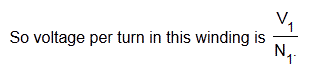
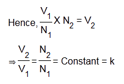
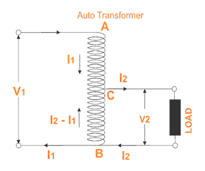
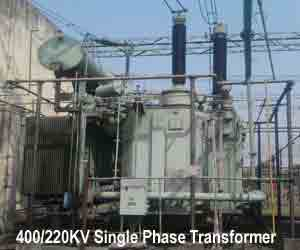

What is Auto Transformer ?
Theory of Auto Transformer
Copper Savings in Auto Transformer
Disadvantages of Using Auto Transformer
Auto Transformer
Auto transformer is kind of electrical transformer where primary and secondary shares same common single winding.
Theory of Auto Transformer
In Auto Transformer, one single winding is used as primary winding as well as secondary winding. But in two windings transformer two different windings are used for primary and secondary purpose. A diagram of auto transformer is shown below.
The winding AB of total turns N1 is considered as primary winding. This winding is tapped from point ′C′ and the portion BC is considered as secondary. Let's assume the number of turns in between points ′B′ and ′C′ is N2.
If V1 voltage is applied across the winding i.e. in between ′A′ and ′C′.

Hence, the voltage across the portion BC of the winding, will be,

As BC portion of the winding is considered as secondary, it can easily be understood that value of constant ′k′ is nothing but turns ratio or voltage ratio of that auto transformer.
When load is connected between secondary terminals i.e.between ′B′ and ′C′, load current I2 starts flowing. The electric current in the secondary winding or common winding is the difference of I2 & I1.

Copper Savings in Auto Transformer
Now we will discuss the savings of copper in auto transformer compared to conventional two winding transformer.
We know that weight of copper of any winding depends upon its length and cross - sectional area. Again length of conductor in winding is proportional to its number of turns and cross - sectional area varies with rated current.
So weight of copper in winding is directly proportional to product of number of turns and rated electric current of the winding.
Therefore, weight of copper in the section AC proportional to,
and similarly, weight of copper in the section BC proportional to,
Hence, total weight of copper in the winding of auto transformer proportional to,
In similar way it can be proved, the weight of copper in two winding transformer is proportional to,
Let's assume, Wa and Wtw are weight of copper in auto transformer and two winding transformer respectively,
∴ Saving of copper in auto transformer compared to two winding transformer,

Auto transformer employs only single winding per phase as against two distinctly separate windings in a conventional transformer. Advantages of using auto transformer. For transformation ratio = 2, the size of the auto transformer would be approximately 50% of the corresponding size of two winding transformer. For transformation ratio say 20 however the size would be 95%. The saving in cost is of course not in the same proportion. The saving of cost is appreciable when the ratio of transformer is low, that is lower than 2.
Disadvantages of Using Auto Transformer
But auto transformer has the following disadvantages:
- Because of electrical conductivity of the primary and secondary windings the lower voltage circuit is liable to be impressed upon by higher voltage. To avoid breakdown in the lower voltage circuit, it becomes necessary to design the low voltage circuit to withstand higher voltage.
- The leakage flux between the primary and secondary windings is small and hence the impedance is low. This results into severer short circuit currents under fault conditions.
- The connections on primary and secondary sides have necessarily to be same, except when using interconnected starring connections. This introduces complications due to changing primary and secondary phase angle particularly in the case-by-case of delta / delta connection.
- Because of common neutral in a star / star connected auto transformer it is not possible to earth neutral of one side only. Both their sides have to have their neutrality either earth or isolated.
- It is more difficult to preserve the electromagnetic balance of the winding when voltage adjustment tappings are provided. It should be known that the provision of adjusting tapping on an auto transformer increases considerably the frame size of the transformer. If the range of tapping is very large, the advantages gained in initial cost is lost to a great event.
 by
by